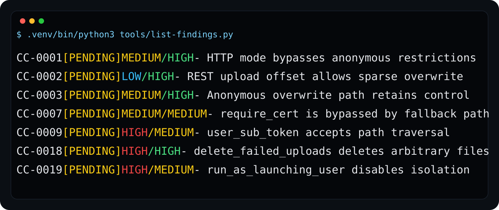
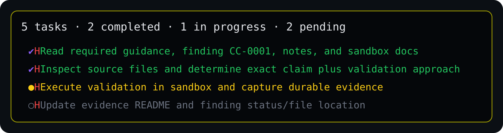
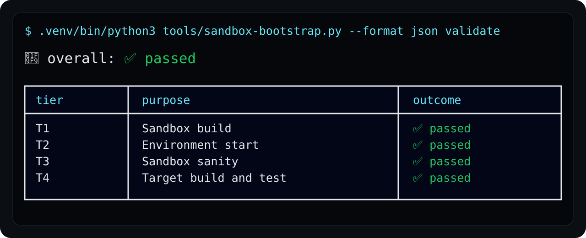
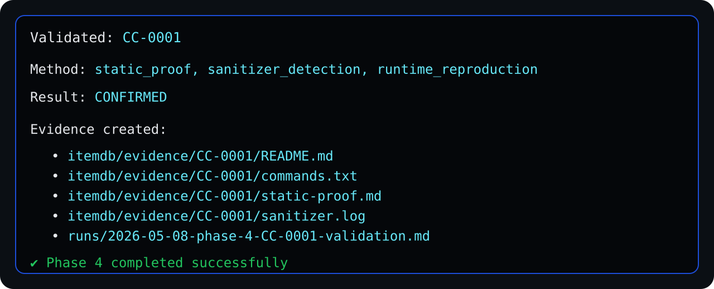
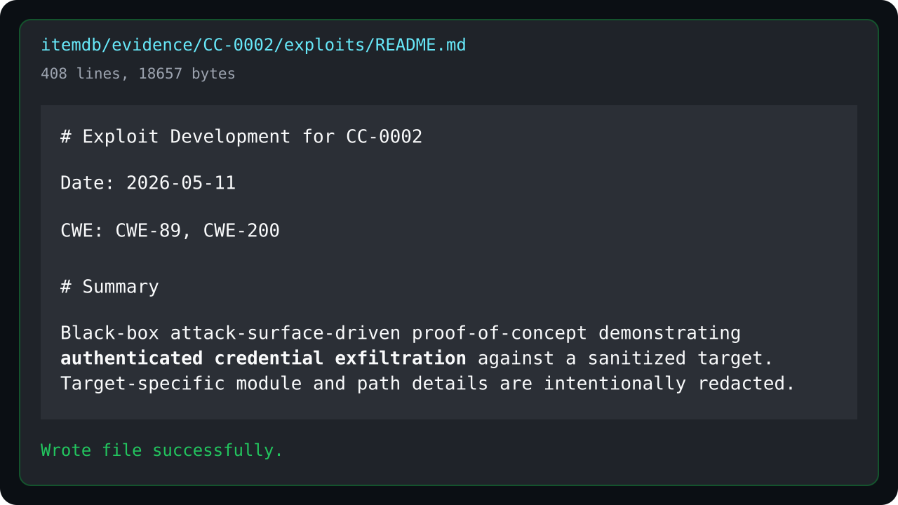
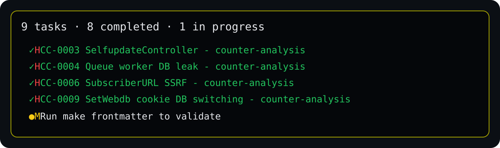
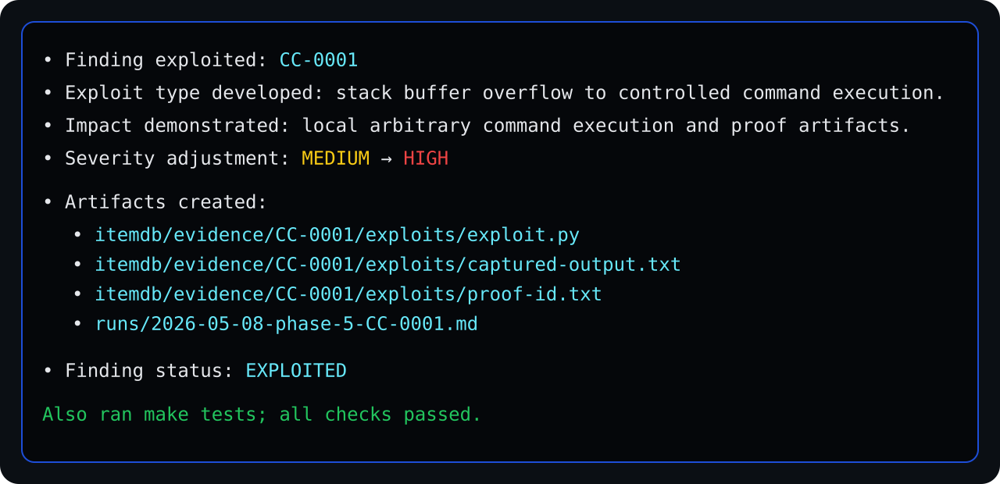

screenshots
What CodeCome actually looks like.
Sanitized snapshots from real audits — enough to show the workflow, not enough to leak target-specific exploit details or credentials. Click any tile for the full-size image.

Finding queue
Reviewable hypotheses awaiting validation.
open ↗
Agent workflow
Agentic, but auditable from the file system up.
open ↗
Sandbox validation
Validation before belief — inside Docker.
open ↗
Evidence artifacts
Every confirmed claim leaves files behind.
open ↗
Generated helpers
Sandbox scripts produced on demand per finding.
open ↗
Exploit notes
Readable PoC writeups, not chat scrollback.
open ↗
Counter-analysis
Try to disprove first — then validate.
open ↗
Impact summary
Exploited findings with linked artifacts.
open ↗An asciinema cast of a full run is planned.